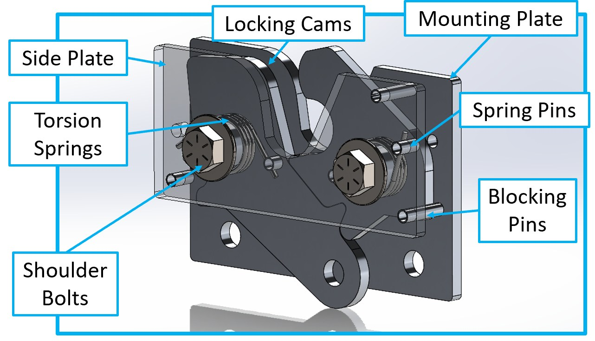
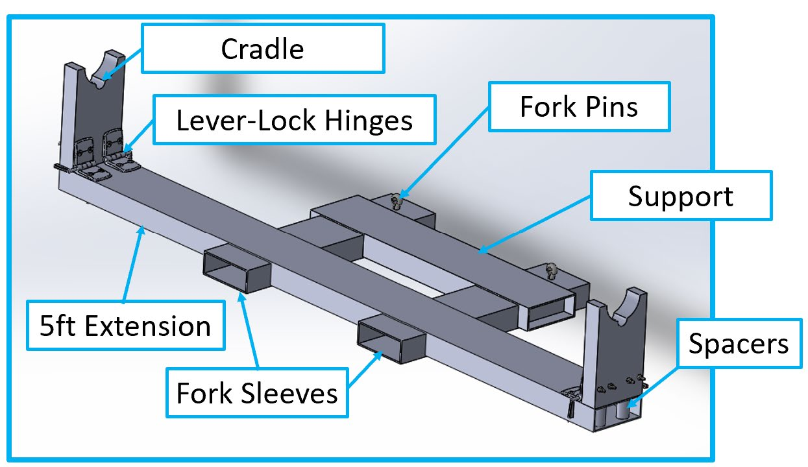

Rotary latch assembly
The latch uses paired locking cams and torsion springs to automatically retain the roll support rod after insertion. Blocking pins constrain motion and shoulder bolts serve as the principal cam pivots. The assembly is mounted to the existing rack structure.
Passive lockingMechanicalRack mounted


Genie dolly attachment
The attachment slides over the existing Genie forks and provides a defined load path from the composite roll to the dolly. A foldable cradle improves storage when the attachment is not in use, while the long extension reaches into the rack to support elevated rolls.
The design intentionally avoids electrical actuation and instead relies on geometry, springs, and direct operator control.
Key design requirements
| Need | Design response |
|---|---|
| Safe heavy-load storage | Mechanical latch retention and robust metal components. |
| No ladder for access | Ground-level pulley release plus Genie dolly retrieval. |
| Compatibility with lab space | Attachment sized around the existing racks and dolly. |
| Simple manufacturing | Waterjet-cut latch plates, standard hardware, welded steel attachment. |
| Low maintenance | No motors, controls, sensors, or powered locking system. |